TRỤC CAM > LẮP |
| 1. LẮP BÁNH RĂNG PHỐI KHÍ TRỤC CAM |
| 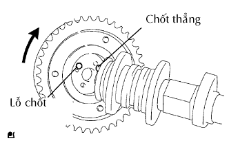 |
Lắp bánh răng phối khí trục cam và trục cam vào nhau bằng cách gióng thẳng rãnh then và chốt thẳng.
Kiểm tra rằng không có khe hở giữa mặt đầu của bánh răng và trục cam.
Xiết chặt bulông có mặt bích với bánh răng phối khí trục cam được cố định tại chỗ.
| 2. LẮP NẮP THÂN XUPÁP |
Bôi dầu động cơ sạch lên đầu thân xupáp và lắp nắp thân xupáp.
| 3. LẮP BỘ ĐIỀU CHỈNH KHE HỞ XUPÁP |
 |
Đặt bộ điều chỉnh khe hở xupáp vào khay chứa đầy dầu động cơ.
Cắm đầu của SST vào píttông của bộ điều chỉnh khe hở xupáp và dùng đầu này ấn viên bi một chiều xuống vào bên trong píttông.
Nén SST và bộ điều chỉnh khe hở xupáp vào nhau để dịch chuyển píttông lên xuống 5 đến 6 lần.
Kiểm tra sự dịch chuyển của píttông và xả khí.
Sau khi xả khí, hãy tháo SST. Sau đó, thử đẩy nhanh và chắc píttông bằng một ngón tay.
Lắp bộ điều chỉnh khe hở xupáp.
| 4. LẮP CÒ MỔ XUPÁP |
Bôi dầu động cơ sạch lên các đầu bộ điều chỉnh khe hở xupáp và các bền mặt nắp thân xupáp. Sau đó lắp các con đội xupáp.
| 5. LẮP TRỤC CAM |
| 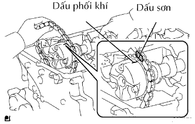 |
Hãy bôi dầu động cơ sạch lên phần cam của trục cam và các ngõng trục trên nắp quy lát.
Lắp xích cam lên bánh răng phối khí trục cam với dấu sơn đã đánh dấu của mắt xích gióng thẳng với dấu phối khí của bánh răng phối khí trục cam.
| 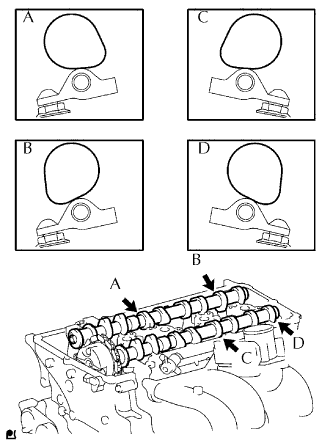 |
Đặt 2 trục cam như trên hình vẽ.
| 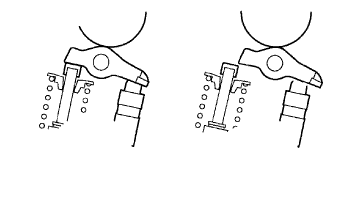 |
| 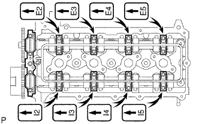 |
Lắp lỏng nắp bạc trục cam số 1.
Kiểm tra vị trí chính xác của từng nắp bạc trục cam và lắp từng cái một.
| 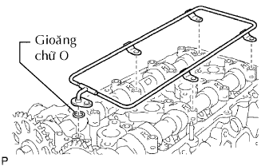 |
Lắp gioăng chữ O mới vào nắp bạc trục cam số 1.
Lắp tạm ống phân phối dầu.
| 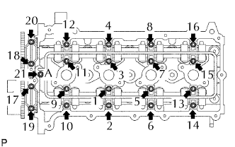 |
Xiết chặt 21 bu lông và 20 vòng đệm theo thứ tự như trên hình vẽ.
| 6. LẮP ĐĨA XÍCH PHỐI KHÍ TRỤC CAM |
| 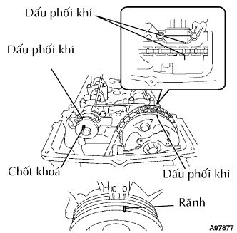 |
Hãy quay trục cam sao cho dấu phối khí trục cam và chốt hãm trục cam số 2 như được chỉ ra trên hình vẽ.
Quay puli trục khuỷu và gióng thẳng rãnh của nó với dấu thời điểm đánh lửa O trên nắp xích cam.
| 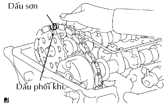 |
Lắp xích cam lên đĩa xích phối khí trục cam với dấu sơn gióng thẳng với các dấu phối khí trên đĩa xích trên trục cam.
Hãy gióng thẳng chốt hãm trục cam số 2 với lỗ chốt của đĩa xích phối khí trục cam. Sau đó lắp đĩa xích phối khí trục cam vào trục cam số 2.
| 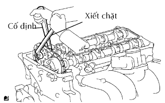 |
Giữ trục cam bằng cờlê và sau đó xiết chặt bulông đĩa xích.
Tháo chìa lục giác ra khỏi bộ căng xích.
| 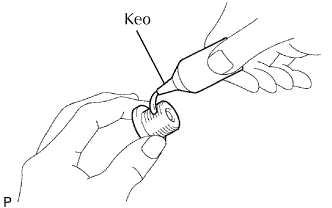 |
Bôi keo lên 2 hoặc 3 ren của nút nắp xích cam.
Dùng đầu khẩu lục giác 10 mm, lắp nút hộp bánh răng phối khí.
| 7. LẮP DẪN HƯỚNG XÍCH CAM |
| 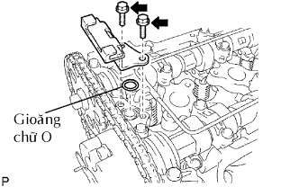 |
Lắp gioăng chữ O mới vào nắp bạc trục cam.
Lắp dẫn hướng xích cam bằng 2 bulông.
| 8. LẮP NẮP ĐẬY NẮP QUY LÁT |
| 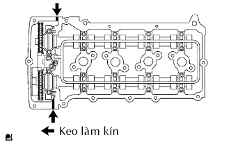 |
Lắp 2 gioăng vào nắp đậy nắp quy lát.
Cạo các keo làm kín (FIPG) cũ.
Bôi keo làm kín vào 2 vị trí như trên hình vẽ.
| 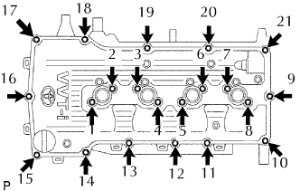 |
Lắp tạm nắp đậy nắp quy lát bằng 19 bulông và 2 đai ốc.
Xiết chặt đều tay 19 bulông và 2 đai ốc theo thứ tự như trong hình vẽ.
Thứ tự đánh số, kiểm tra lại rằng các bu lông có đánh dấu 1 đến 18 đã được xiết đạt mômen xiết tiêu chuẩn. Hãy xiết chặt các bu lông nếu cần thiết.
Lắp dây điện bằng 6 kẹp.
| 9. LẮP CUỘN ĐÁNH LỬA |
Lắp cuộn đánh lửa bằng bu lông.
| 10. LẮP ỐNG NỐI NẠP KHÍ |
 |
Ngắt ống chân không.
Ngắt ống thông hơi số 2.
Ngắt giắc nối cảm biến MAF và các kẹp dây điện.
Nới lỏng kẹp ống và tháo 4 bu lông, bộ lọc gió và cụm ống nối nạp khí.
| 11. LẮP ĐAI DẪN ĐỘNG |
 |
Lắp dây đai dẫn động vào các puli trừ puli bộ căng đai.
Dùng một chi tiết có hình lục giác được chỉ ra bởi mũi tên trên hình minh hoạ để dịch chuyển puli bộ căng đai xuống và sau đó lắp đai dẫn động lên puli căng đai.
 |
Sau khi đã lắp một dây đai mới, hãy kiểm tra rằng dấu chỉ báo của bộ căng đai nằm trong vùng A như trong hình vẽ.
| 12. LẮP CÁP ÂM VỚI CỰC ÂM ẮC QUY |
| 13. TIẾN HÀNH THIẾT LẬP BAN ĐẦU |
TIẾN HÀNH THIẾT LẬP BAN ĐẦU (Xem trang Kích chuột vào đây).
| 14. KIỂM TRA RÒ RỈ DẦU ĐỘNG CƠ |
Khởi động động cơ và kiểm tra rằng không có rò rỉ dầu sau khi tiến hành bảo dưỡng.
| 15. KIỂM TRA RÒ RỈ NƯỚC LÀM MÁT ĐỘNG CƠ |
Kiểm tra rò rỉ nước làm mát động cơ (Xem trang Kích chuột vào đây).
| 16. KIỂM TRA THỜI ĐIỂM ĐÁNH LỬA |
Hâm nóng động cơ rồi tắt máy.
 |
Khi dùng máy chẩn đoán.
Kiểm tra thời điểm đánh lửa.
Nối máy chẩn đoán với giắc DLC3.
Khởi động động cơ và để nó chạy không tải.
Bật công tắc chính của máy chẩn đoán ON.
Truy cập vào các mục sau đây: Powertrain / Engine and ECT / Data List / IGN Advance.
 |
Khi không dùng máy chẩn đoán.
Kiểm tra thời điểm đánh lửa.
Dùng SST, nối cầu đo của máy đo tốc độ động cơ với cực 9 (TAC) của giắc DLC3.
 |
Kẹp đầu đo của đèn soi thời điểm đánh lửa vào 4 dây dẫn hoặc dây dẫn màu xanh đỏ của giắc nối cuộn đánh lửa xi lanh No.1.
Khởi động động cơ.
 |
Dùng SST, nối tắt các cực 13 (TC) và 4(CG) của giắc DLC3.

 |
Dùng đèn soi thời điểm đánh lửa, đo thời điểm đánh lửa.
Ngắt SST ra khỏi các cực 13 (TC) và 4(CG) của giắc DLC3.
Kiểm tra thời điểm đánh lửa.
Chắc chắn rằng thời điểm đánh lửa dịch sang phía sớm khi tăng tốc độ động cơ.
Tháo đèn soi lửa.
| 17. KIỂM TRA TỐC ĐỘ KHÔNG TẢI |
Hâm nóng động cơ rồi tắt máy.
Khi dùng máy chẩn đoán.
Kiểm tra tốc độ không tải.
|
Nối máy chẩn đoán với giắc DLC3.
Khởi động động cơ và để nó chạy không tải.
Bật công tắc chính của máy chẩn đoán ON.
Truy cập vào các mục sau đây: Powertrain / Engine and ECT / Data list / Engine SPD.
|
Khi không dùng máy chẩn đoán.
Kiểm tra tốc độ không tải.
Dùng SST, nối đầu đo của đồng hồ đo tốc độ động cơ với cực 9 (TAC) của giắc DLC3.
Khởi động động cơ và để nó chạy không tải.
Kiểm tra tốc độ không tải.
| 18. KIỂM TRA CO/HC |
Khởi động và hâm nóng động cơ.
Chạy động cơ tại tốc độ 2500 vòng/phút trong khoảng 180 giây và động cơ chạy không tải.
 |
Cắm đầu đo của máy đo CO/HC vào sâu ít nhất là 40 cm (1.3 ft.) vào đuôi ống xa.
Kiểm tra nồng độ CO/HC tại tốc độ không tải.
Nếu nồng độ CO/HC không như tiêu chuẩn, hãy khắc phục hư hỏng theo thứ tự được trình bày ở bảng dưới đây.
Kiểm tra hoạt động của cảm biến ôxy có sấy (Xem trang Kích chuột vào đây).
Hãy xem bảng dưới đây để tìm nguyên nhân khác, sau đó kiểm tra nguyên nhân và sửa chữa nếu cần.
| CO | HC | Hư hỏng | Các nguyên nhân |
| Bình thường | Cao | Chạy không tải không êm |
|
| Thấp | Cao | Chạy không tải không êm (Chỉ số HC dao động) |
|
| Cao | Cao | Chạy không tải không êm (Khói đen ra khỏi ống xả) |
|
| 19. KIỂM TRA CHỨC NĂNG CỦA CỔ HỌNG GIÓ |
| 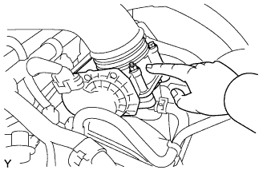 |
Kiểm tra tiếng kêu hoạt động của môtơ điều khiển bướm ga.
Bật khoá điện ON.
•Khi đạp bàn đạp ga, hãy nghe âm thanh hoạt động của môtơ đang chạy. Chắc chắn rằng không có tiếng kêu do ma sát phát ra từ môtơ.
Nếu nghe thấy tiếng kêu do cọ xát, hãy thanh thế cổ họng gió.
 |
Kiểm tra cảm biến vị trí bướm ga.
Nối máy chẩn đoán với giắc DLC3.
Bật khoá điện ON.
Dưới dữ liệu hiện thời, hãy kiểm tra rằng số phần trăm góc mở bướm ga (Throttle Pos) là nằm trong tiêu chuẩn.